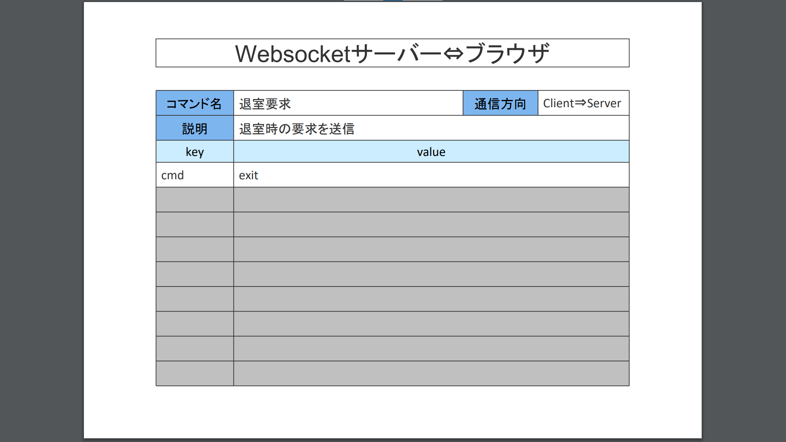

SOCKET-MANAGER
>> Reference
MAIN-MENU
▶フレームワークのご紹介
▶イベントハンドラについて
IMPLEMENT
▶初期化クラス
▶UNITパラメータクラス
▶プロトコルUNITクラス
▶コマンドUNITクラス
▶メイン処理クラス
▶設定ファイル
▶メッセージファイル
>> ランタイムライブラリ
ADVANCED
▶アーキテクチャ
▶マルチサーバーの構成
▶TCP/UDP通信について
▶Laravelと連携する
▶システム設定ファイル
OTHER-PROJECT
▶新規開発環境
▶Websocketサーバー開発環境
▶フレームワークのDevOps環境
>> マインクラフト専用環境
>> GUI & CLI ランチャー
EXTRA-MENU
▶デモサーバーの種類
▼デモのコマンド仕様
入室時のコマンド
退室時のコマンド
メッセージコマンド
プライベート送信コマンド
▶デモの設定ファイル
▶マインクラフトの通信仕様
▶切断フレームの検証
PHP-TECHNIQUE
▶参照渡し
▶PHPDocのフォーマット
【デモのコマンド仕様】
入室時のコマンド
コマンドシーケンス（シングルサーバーの場合）
コマンドシーケンス（マルチサーバーの場合）
コマンドデータ
退室時のコマンド
コマンドシーケンス（exitコマンドの場合）
コマンドシーケンス（closeコマンドの場合）
コマンドデータ

メッセージコマンド
コマンドシーケンス
コマンドデータ
プライベート送信コマンド
コマンドシーケンス（シングルサーバーの場合）
コマンドシーケンス（マルチサーバーの場合）
コマンドデータ